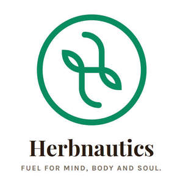

Trade Mark Journal No.2025/009 28 February 2025
UK00004160191 13 February 2025 (3,5,20,21,29,30,31,32,35,37,41,42,43,44)

- Class 3
- Herbal extracts for cosmetic purposes; Bath herbs; Incense sachets; Aromatic potpourris; Aromatherapy creams; Oral hygiene preparations; Feminine hygiene cleansing towelettes; Douching preparations for personal sanitary or deodorant purposes [toiletries]; Breath freshening preparations for personal hygiene; Cleansers for intimate personal hygiene purposes, non medicated; Nasal cleaning preparations for personal sanitary purposes; Vaginal washes for personal sanitary or deodorant purposes; Sanitary preparations being toiletries; Moist wipes for sanitary and cosmetic purposes; Body cleaning and beauty care preparations; Sets of cosmetic oral care products; Teeth cleaning lotions; Nutritional creams (Non-medicated -); Seaweed for cosmetology; Aromatherapy lotions; Cosmetics; Skincare cosmetics; Moisturisers [cosmetics]; Cosmetics and cosmetic preparations; Hair cosmetics; Skin fresheners [cosmetics]; Cosmetics for eye-lashes; Cosmetics for suntanning; Anti-aging moisturizers used as cosmetics; Non-medicated cosmetics; Lip cosmetics; Nail cosmetics; Skin moisturizers used as cosmetics; Natural cosmetics; Cosmetics preparations; Mousses [cosmetics]; Make-up palettes containing cosmetics; Cosmetics in the form of lotions; Tanning gels [cosmetics]; Tanning oils [cosmetics]; Colour cosmetics; Facial creams [cosmetics]; Beauty care cosmetics; Self-tanning preparations [cosmetics]; Suncare lotions [for cosmetic use]; Cosmetics for animals; Tanning preparations [cosmetics]; Eyebrow cosmetics; Decorative cosmetics; Multifunctional cosmetics; Eye cosmetics; Milks [cosmetics]; Body creams [cosmetics]; After-sun oils [cosmetics]; Skin masks [cosmetics]; Tanning milks [cosmetics]; Cosmetics for eye-brows; Functional cosmetics; Facial gels [cosmetics]; Suntan oils [cosmetics]; Skin care cosmetics; Fluid creams [cosmetics]; Suntan lotion [cosmetics]; Cosmetics for children; Non-medicated cosmetics and toiletry preparations; Humectant preparations [cosmetics]; Emollient preparations [cosmetics]; Cosmetics in the form of creams; Powder compacts [cosmetics]; Sun-tanning preparations [cosmetics]; Cosmetic hair lotions; Colour cosmetics for the skin; Suntanning oil [cosmetics]; After-sun milks [cosmetics]; After-sun milk [cosmetics]; Cosmetic moisturisers; Cosmetics for use on the skin; Sunscreens [for cosmetic use]; Cosmetic creams and lotions; Bath powder [cosmetics]; Skin recovery creams [cosmetics]; Night creams [cosmetics]; Cosmetic products in the form of aerosols for skincare; Cosmetics for the use on the hair; Sun blocking lipsticks [cosmetics]; Body gels [cosmetics]; Body and facial creams [cosmetics]; Lip stains [cosmetics]; Sunscreen [for cosmetic use]; Sunscreen creams [for cosmetic use]; Body care cosmetics; Creams (Cosmetic -); Cosmetic creams; Cosmetic soaps; Cosmetics in the form of powders; Cosmetic skin fresheners; Cosmetics containing keratin; Hair care lotions [for cosmetic use]; Dyes (Cosmetic -); Cosmetic dyes; Cosmetics in the form of oils; After-sun lotions [for cosmetic use]; Cosmetics containing panthenol; Nail paint [cosmetics]; Beauty lotions; Cosmetic facial lotions; Facial lotions [cosmetic]; Cosmetic suntan lotions; Perfume oils for the manufacture of cosmetic preparations; Skin care lotions [cosmetic]; Colour cosmetics for children; Nail hardeners [cosmetics]; Tissues impregnated with cosmetics; Anti-aging creams [for cosmetic use]; Sun protecting creams [cosmetics]; Nail tips [cosmetics]; Nail primer [cosmetics]; Cosmetic products for the shower; Anti-ageing creams [for cosmetic use]; Smoothing emulsions [cosmetics]; Skin cleansers [cosmetic]; Perfumed powders [for cosmetic use]; Liners [cosmetics] for the eyes; Moisturising skin lotions [cosmetic]; Cosmetic creams for the skin; Skin creams [cosmetic]; Skin creams [for cosmetic use]; Body and facial gels [cosmetics]; Car shampoos; Car wax; Body wash; Car polish; Hair and body wash; Facial wash; Face wash; Windshield washing fluid; Car wax with a paint sealant; Car cleaning preparations; Vehicle shampoos; Face wash [cosmetic]; Vehicle tyre polish; Rinsing aids for use when washing clothes; Body washes; Polish for furniture and flooring; Furniture polish; Furniture polishes; Furniture cleaner; Cleaning preparations for use in livestock farming; Cold cream; Carpet cleaning preparations; Organic cosmetics; Organic makeup; Essential oils as perfume for laundry purposes; Natural oils for perfumes; Body oils; Perfume oils; Oils for toiletry purposes; Natural oils for cleaning purposes; Oils for cleaning purposes; Natural oils for cosmetic purposes; Soaps; Deodorant soap; Soap (Deodorant -); Bath soaps; Soaps and gels; Perfumed soaps; Antiperspirant soap; Bath soap; Facial soaps; Liquid bath soaps; Liquid soaps; Handmade soap; Cosmetic soap; Shampoo; Soaps for toilet purposes; Soaps for household use.
- Class 5
- Herbal medicine; Herbal supplements; Herbal tea for medicinal use; Herbal teas for medicinal purposes; Liquid herbal supplements; Herbal beverages for medicinal use; Decoctions of medicinal herb; Medicinal herbs; Herbs (Medicinal -); Medicinal herb extracts; Extracts of medicinal herbs; Medicinal herbal extracts for medical purposes; Medicinal herb infusions; Herbal anti-itch ointments for pets; Herbal creams for medical use; Chinese traditional medicinal herbs; Medicinal tea; Anti-oxidants obtained from herbal sources; Herbal compounds for medical use; Herbal male enhancement capsules; Herbal detoxification agents; Herbal extracts for medical purposes; Herb teas for medicinal purposes; Herbal sprays for medical use; Herbal preparations for medical use; Medicinal ointments; Herbal honey throat lozenges; Artificial tea [for medicinal use]; Homeopathic anti-inflammatory ointments; Plant and herb extracts for medicinal use; Homeopathic medicines; Medicinal infusions; Infusions (Medicinal -); Homeopathic supplements; Herbal sore skin ointments for pets; Sarsaparilla beverages [medicinal]; Ginseng for medicinal use; Medicinal oils; Oils (Medicinal -); Herbal mud packs for therapeutic use; Herbs for medicinal purposes; Extracts of medicinal plants; Homeopathic pharmaceuticals; Medicinal sprays; Medicinal beverages; Medicine tonics; Medicinal drinks; Tonics [medicines]; Medicinal alcohol; Medicinal herbs in dried or preserved form; Pharmaceuticals and natural remedies; Medicinal clays; Anti-oxidants for medicinal use; Dried Chinese boxthorn fruits for Chinese medicinal use; Medicinal preparations and substances; Antiallergic medicines; Medicinal clay preparations; Medicinal roots; Roots (Medicinal -); Antioxidant pills; Tisanes [medicated beverages]; Malt extracts for pharmaceutical use; Multi-purpose medicated mentholated salves; Medicinal healthcare preparations; Anti-inflammatory ointments; Effervescent analgesic pharmaceutical preparations; Anti-inflammatory salves; Vitamin supplements; Dietary supplements; Nutritional supplements; Probiotic supplements; Flaxseed dietary supplements; Calcium supplements; Chlorella dietary supplements; Anti-oxidant supplements; Colostrum supplements; Protein supplements; Dietary supplements consisting of vitamins; Prebiotic supplements; Lecithin dietary supplements; Food supplements; Mineral dietary supplements; Zinc dietary supplements; Propolis dietary supplements; Mineral nutritional supplements; Acai powder dietary supplements; Dietary and nutritional supplements; Liquid dietary supplements; Nutraceuticals for use as a dietary supplement; Vitamin supplements for animals; Protein dietary supplements; Vitamin and mineral supplements; Liquid nutritional supplements; Linseed dietary supplements; Yeast dietary supplements; Casein dietary supplements; Liquid vitamin supplements; Enzyme dietary supplements; Dietary supplements for animals; Dietary supplements for pets; Anti-oxidant food supplements; Dietary food supplements; Alginate dietary supplements; Albumin dietary supplements; Flaxseed oil dietary supplements; Vitamin and mineral supplements for pets; Wheat dietary supplements; Dietary supplements for humans; Dietary supplements for infants; Pollen dietary supplements; Glucose dietary supplements; Vitamin and mineral food supplements; Dietary supplements in powder form; Protein powder dietary supplements; Mineral dietary supplements for animals; Dietary supplements with a cosmetic effect; Nutritional supplements for veterinary use; Dietary supplements for medical use; Whey protein dietary supplements; Medicated food supplements; Mineral dietary supplements for humans; Food supplements for sportsmen; Nutritional supplements consisting primarily of magnesium; Protein supplements for animals; Dietary supplements consisting primarily of magnesium; Vitamin supplement patches; Health-aid foods supplements containing ginseng; Soy protein dietary supplements; Health food supplements made principally of vitamins; Vitamin preparations in the nature of food supplements; Dietary supplement drinks; Soy isoflavone dietary supplements; Linseed oil dietary supplements; Dietary supplements and dietetic preparations; Nutritional supplements consisting of fungal extracts; Nutritional supplements consisting primarily of calcium; Brewer's yeast dietary supplements; Folic acid dietary supplements; Dietary supplements consisting primarily of calcium; Calcium tablets as a food supplement; Nutritional supplements consisting primarily of zinc; Dietary supplements for controlling cholesterol; Nutritional supplements for livestock feed; Nutritional supplements consisting primarily of iron; Herbal dietary supplements for persons special dietary requirements; Food supplements for veterinary use; Dietary supplements and dietetic preparations containing CBD oil; Dietary supplements consisting primarily of iron; Food supplements for dietetic use; Dietary supplements promoting fitness and endurance; Nutritional supplement energy bars; Multivitamins; Medicated supplements for animal feedstuffs; Dietary supplement drink mixes; Dietary food supplements used for modified fasting; Health food supplements made principally of minerals; Feed supplements for veterinary use; Mineral supplements for feeding livestock; Food supplements for medical purposes; Ganoderma lucidum spore powder dietary supplements; Medicated supplements for foodstuffs for animals; Activated charcoal dietary supplements; Zinc supplement lozenges; Food supplements for non-medical purposes; Fitness and endurance supplements; Food supplements in liquid form; Natural dietary supplements for treating claustrophobia; Wheat germ dietary supplements; Protein supplement shakes; Dietary supplements for pets in the nature of a powdered drink mix; Vitamin supplements for use in renal dialysis; Ground flaxseed fiber for use as a dietary supplement; Royal jelly dietary supplements; Antibiotic food supplements for animals; Pine pollen dietary supplements; Diet capsules; Health food supplements for persons with special dietary requirements; Food supplements consisting of amino acids; Dietary supplements for humans not for medical purposes; Nutritional supplement meal replacement bars for boosting energy; Powdered nutritional supplement drink mix; Dietary supplements for human beings; Fodder supplements for veterinary purposes; Vitamins and vitamin preparations; Dietary pet supplements in the form of pet treats; Preparations for supplementing the body with essential vitamins and microelements; Health-aid foods supplement containing red ginseng; Capsules for medicines; Multi-vitamin preparations; Food supplements consisting of trace elements; Nutritional supplements made of starch adapted for medical use; Powdered nutritional supplement energy drink mix; Powdered fruit-flavored dietary supplement drink mix; Delivery agents in the form of coatings for tablets that facilitate the delivery of nutritional supplements; Preparations of vitamins; Dietary supplemental drinks; Multivitamin preparations; Vitamin tablets; Dietetic foods for use in clinical nutrition; Disinfectants; Disinfectants for hygiene purposes; Disinfectants for sanitary purposes; Disinfecting handwash; Disinfectants for hygienic purposes; Cleaning cloths impregnated with disinfectant for hygiene purposes; Disinfectants for sanitary use; Disinfectants for chemical toilets; Disinfectants and antiseptics; Wipes impregnated with disinfectants for hygiene purposes; Disinfectant swabs; Germicidal detergents; Sanitary sterilising preparations; Microbicides for wastewater treatment; Disinfectant dressings; Disinfectants for veterinary use; Chlorine detoxification agents for medical purposes; Disinfectants for dental apparatus and instruments; Disinfectant soap; Disinfectants for medical instruments; Biological indicators for monitoring sterilization processes for medical or veterinary purposes; Germicides; Disinfectants for medical use; Feminine hygiene products; Feminine hygiene pads; Absorbent articles for personal hygiene; Hygienic lubricants; Hygienic bandages; Bandages (Hygienic -); Hygienic preparations for veterinary use; Sanitary tampons; Tampons [sanitary]; Sanitary preparations for veterinary use; Sanitary towels; Towels (Sanitary -); Sanitary preparations for medical use; Sanitary preparations for medical purposes; Sanitary wear; Knickers for sanitary purposes; Knickers (Sanitary -); Sanitary knickers; Underpants for sanitary purposes; Sanitary panties; Panties (Sanitary -); Sanitary napkins; Chemical preparations for sanitary purposes; Sanitary pads; Hygienic preparations and articles; Chemical preparations for sanitary use; Sanitary belts; Sanitary pants for pets; Nasal cleaning preparations for medical purposes; Bacteriological preparations for medical and veterinary use; Sanitary pants; Pants (Sanitary -); Sanitisers for household use; Dietetic and nutritional preparations; Dietary and nutritional preparations; Dietary fiber to aid digestion; Intravenous fluids used for rehydration, nutrition and the delivery of pharmaceutical preparations; Nutritional additives to foodstuffs for animals, for medical purposes; Dietetic food adapted for veterinary use; Dietetic food adapted for medical use; Nutritional drink mix for use as a meal replacement; Dietetic foods adapted for medical purposes; Dietetic foods adapted for medical use; Bee pollen for use as a dietary food supplement; Dietetic food preparations adapted for medical use; Dietetic foods adapted for infants; Dietetic food preparations adapted for medical purposes; Dietetic foods for medicinal purposes; Food for medically restricted diets; Fiber (Dietary -); Dietary fiber; Fibre (Dietary -); Dietary fibre; Food for diabetics; Anti-oxidants for dietary use; Baby food; Food for babies; Food for infants; Babies' food; Preparations for use in naturopathy; Medicine; Cough medicine; Pharmaceuticals for the treatment of erectile dysfunction; Medicines for the treatment of gastrointestinal diseases; Yeast for medical, veterinary or pharmaceutical purposes; Antibiotics for use in dentistry; Yeast extracts for medical, veterinary or pharmaceutical purposes; Antidiabetic pharmaceuticals; Medicines for treating intestinal disorders; Pharmaceutical for the treatment of erectile dysfunction; Medicines for intestinal disorders; Pharmaceutical preparations for the treatment of musculo-skeletal disorders; Pharmaceutical preparations for the treatment of Musculo-skeletal disorders; Pharmaceutical products for the treatment of viral diseases; Ferments for medical or veterinary use; Pharmaceutical products for the treatment of infectious diseases; Therapeutic creams [medical]; Car deodorants; Car air freshener; Car air fresheners; Medicated hand wash; Medicated mouth wash; Vitamin drinks; Vitamin and mineral preparations; Blood protein fractions; Vitamin preparations; Protein synthesis inhibitors; Human plasma protein; Vitamin drops; Prenatal vitamins; Vitamin A preparations; Gummy vitamins; Vitamin C preparations; Mixed vitamin preparations; Vitamin enriched bread for therapeutic purposes; Vitamin D preparations; Effervescent vitamin tablets; Vitamin B preparations; Vitamins for animals; Antioxidants; Vitamin fortified beverages for medical purposes; Agricultural pesticides; Agricultural biopesticides; Pesticides for agricultural use; Milk sugar; Medicated candies; Gelatin capsules for pharmaceuticals; Calcium fortified candy; Medicated candy; Candy, medicated; Milk powders [foodstuff for babies]; Powdered milk foods for infants; Anti-bacterial soap; Antibacterial soap; Medicated soap; Bathroom deodorants; Toilet deodorants.
- Class 20
- Furniture; Furniture and furnishings; Upholstered furniture; Metal furniture and furniture for camping; Dressers [furniture]; Cushions [furniture]; Wooden furniture; Credenzas [furniture]; Furniture cabinets; Cabinets [furniture]; Patio furniture; Recliners [furniture]; Bentwood furniture; Pouffes [furniture]; Kitchen furniture; Washstands [furniture]; Bedroom furniture; Cupboards being furniture; Outdoor furniture; Nursery furniture; Drawers for furniture; Benches [furniture]; Household furniture; Garden furniture; Bathroom furniture; Lawn furniture; Furniture shelves; Shelves [furniture]; Desks [furniture]; Panelling for furniture; Furniture for kitchens; Kitchen dressers [furniture]; Leather furniture; Wooden shelving [furniture]; Slatted furniture; Stationery cabinets [furniture]; Chairs being office furniture; Shop furniture; Tables [furniture]; Seating furniture; Furniture moldings; Furniture (Office -); Indoor furniture; Furniture for bathrooms; Consignment shelving [furniture]; Lounge furniture; Bamboo furniture; Furniture for storage; Storage furniture; Furniture of metal; Metal furniture; Furniture racks; Racks [furniture]; Furniture partitions; Trolleys [furniture]; Furniture parts; Furniture frames; Arbours [furniture]; Furniture chests; Pet furniture; Lockers [furniture]; Pedestals [furniture]; Furniture partitions of wood; Partitions of wood for furniture; Furniture (Partitions of wood for -); Consoles [furniture]; Antique style furniture; Furniture for offices; Furniture for vivariums; Furniture for shops; Transformable furniture; Doors for furniture; Furniture doors; Stackable furniture; Furniture for washrooms; Mirrors [furniture]; Furniture for conservatories; Glass furniture; Trestles [furniture]; Metal cabinets [furniture]; Inflatable furniture; Furniture (Inflatable -); Wooden racks [furniture]; Garden furniture manufactured from wood; Fireguards [furniture]; Furniture for children; Metal shelving [furniture]; Seats [furniture]; Furniture for caravans; Joints for furniture; Modular bathroom furniture; Computer furniture; Shelves being nursery furniture; Furniture for camping; Furniture for saunas; Legs for furniture; Camping furniture; Drawers [furniture parts]; Drawers as furniture parts; Domestic furniture; Cane furniture; Screens [furniture]; Furniture screens; Countertops [furniture parts]; Furniture for babies; Metal office furniture; School furniture; Furniture (School -); Wooden sticks for holding candy or ice cream.
- Class 21
- Cookware; Steamers [cookware]; Aluminium cookware; Cookware [pots and pans]; Tableware, cookware and containers; Cookware for use in microwave ovens; Bakeware; Griddles [cooking utensils]; Cookware and tableware, except forks, knives and spoons; Non-electric griddles [cooking utensils]; Griddles [non-electric cooking utensils]; Spatulas [kitchen utensils]; Aluminium bakeware; Cookware, except forks, knives and spoons; Cooking utensils; Cooking pots and pans [non-electric]; Non-electric cooking pots and pans; Cooking pans; Grills [cooking utensils]; Skillets; Tenderizers [kitchen utensils]; Kitchen utensils of silicon; Kitchen utensils; Ovenware; Non-electric cooking pans; Cooking pans [non-electric]; Cooking utensils, non-electric; Oven-to-table tableware; Household or kitchen utensils; Molds [kitchen utensils]; Baking utensils; Basting spoons [cooking utensils]; Dishes [household utensils]; Cooking pots for use in microwave ovens; Simmer rings [cooking utensils]; Aluminium moulds [kitchen utensils]; Graters [household utensils]; Saucepans; Moulds [kitchen utensils]; Wire baskets [cooking utensils]; Saucepans (Earthenware -); Earthenware saucepans; Cooking graters; Grills in the nature of cooking utensils; Bakeware [not toys]; Ceramic tableware; Cooking pots [non-electric]; Turners (kitchen utensil); Graters [non-electric household utensils]; Skillets (Non-electric -); Pressure cooking saucepans, non-electric; Non-electric pressure cooking saucepans; Cooking pots; Tableware; Frying pans [non-electric]; Non-electric frying pans; Household utensils; Sieves [household utensils]; Trivets [table utensils]; Cooking pots, non-electric / Non-electric cooking pots; Mixing spoons [kitchen utensils]; Dishware; Tableware, other than knives, forks and spoons; Scourers for saucepans; Portable pots and pans for camping; Skewers (cooking utensil); Kitchen graters; Dinnerware; Cooking utensils for barbecue use; Kitchen utensils, not of precious metal; Cooking utensils for use with domestic barbecues; Disposable paperboard bakeware; Sifters [household utensils]; Bone china tableware [other than cutlery]; Couscous cooking pots, non-electric; Dishes for microwave ovens; Spatulas for kitchen use; Tortilla presses, non-electric [kitchen utensils]; Roaster pans; Metal pans; Frying pans; Pans (Frying -); Tableware, except forks, knives and spoons; Cooking strainers; Egg separators [kitchen utensils]; Dinnerware of porcelain; Stir-fry pans; Tableware of porcelain; Non-electric rice cooking pots; Jewelry dishes; Cinder sifters [household utensils]; Lunch boxes; Meal trays; Lunch pails; Ice cream scoops; Cream jugs; Ice cream makers, other than self-refrigerating.
- Class 29
- Organic milk; Organic coconut oil for culinary purposes; Organic nut and seed-based snack bars; Animal fats for food; Vegetable fats for food; Milk powder for nutritional purposes; Meat-based snack foods; Vegetable-based snack foods; Snack foods based on legumes; Meat-based snack food; Snack foods based on vegetables; Potato-based snack foods; Potato snack foods; Fish-based snack food; Vegetable-based snack food; Casseroles [food]; Oils for food; Lard for food; Lard [for food]; Suet for food; Agar-agar for food; Jellies for food; Fruit-based snack food; Snack food (Fruit-based -); Tofu-based snack food; Animal marrow for food; Marrow (Animal -) for food; Animal oils for food; Protein milk; Formed textured vegetable protein for use as a meat substitute; Albumin milk; Milk (Albumin -); Nut-based snack foods; Cheese-based snack foods; Soy-based snack foods; Potato crisps in the form of snack foods; Sweet corn-based snack foods; Fruit- and nut-based snack bars; Potato snacks; Fruit based snack foods; Fruit snacks; Nut and seed-based snack bars; Coconut-based snacks; Tofu-based snacks; Milk-based snacks; Legume-based snacks; Dried fruit-based snacks; Candied fruit snacks; Snacks of edible seaweed; Snack mixes consisting of dehydrated fruit and processed nuts; Snack foods based on nuts; Nut-based meal replacement bars; Yogurt drinks; Nut-based food bars; Fruit-based meal replacement bars; Low-fat potato crisps; Yogurt-based beverages; Desserts of yogurt; Yoghurt beverages; Snack mixes consisting of processed fruits and processed nuts; Flavoured milk powder for making drinks; Flavoured milk drinks; Milk shakes; Coconut milk; Oat milk; Cream cheese; Flavoured milk; Coconut milk [beverage]; Coconut milk used as beverage; Coconut milk powder; Powdered soya milk; Powdered cream; Almond milk; Flavoured milk beverages; Milk drinks; Coffee cream in the form of powder; Cocoa flavored milk beverages; Cream; Powdered milk; Rice milk [milk substitute]; Soya milk [milk substitute]; Milk beverages with cocoa; Soya milk; Sour milk; Milk tea, milk predominating; Coconut milk for cooking; Cream powder; Soya bean milk; Oat-based beverages [milk substitute]; Yoghurt drinks; Milk powder; Milk curds; Tea flavored eggs; Dried milk for food; Milk-based beverages flavored with chocolate; Soybean milk [soy milk]; Milk beverages; Fruit jellies [not being confectionery]; Jellies for food, other than confectionery; Almond jelly; Rice milk; Noodle soup; Fermented vegetables; Canned vegetables; Vegetables, tinned; Processed fruits; Pre-cut vegetables for salads; Cut fruits; Coconut flakes; Edible oils; Cooking oils; Spiced oils; Nut oils; Almond milk-based beverages; Soy milk-based beverages.
- Class 30
- Herbal tea [other than for medicinal use]; Herbal teas; Non-medicinal herbal tea; Herbal tea; Herbal infusions [other than for medicinal use]; Herbal infusions; Herbal teas, other than for medicinal use; Non-medicinal herbal infusions; Herbal honey; Herbal teas [infusions]; Aromatic teas [other than for medicinal use]; Herb teas, other than for medicinal use; Herbal honey lozenges [confectionery]; Herb teas, other than for medicinal purposes; Sweets (Non-medicated -) containing herbal flavourings; Herb tea [infusions]; Fruit flavoured tea [other than medicinal]; Orange flavoured tea [other than for medicinal use]; Artificial tea [other than for medicinal use]; Apple flavoured tea [other than for medicinal use]; Processed ginseng used as a herb, spice or flavoring; Packaged tea [other than for medicinal use]; Teas (Non-medicated -) flavoured with lemon; Herbal preparations for making beverages; Peppermint sweets [other than for medicinal use]; Jasmine tea, other than for medicinal purposes; Tea essences (Non-medicated -); Tea extracts (Non-medicated -); Ginseng tea; Peppermint bonbons [other than for medicinal use]; Tea (Non-medicated -) containing cranberry extracts; Teas (Non-medicated -) containing lemon; Non-medicinal burdock root tea (Wooungcha); Tea (Non-medicated -) consisting of cranberry extracts; Crackers flavoured with herbs; Herb sauces; Jasmine tea bags, other than for medicinal purposes; Non-medicinal infusions; Peppermints [other than for medicinal use]; Tea essences; Culinary herbs; Peppermint pastilles [confectionery], other than for medicinal use; Chamomile tea; Oolong tea [Chinese tea]; Infusions, not medicinal; Sage tea; Tisanes made of tea (Non-medicated -); Aromatic preparations for making non-medicated tisanes; Dried herbs; Tea extracts; Teas (Non-medicated -); Flavourings of tea; Rosemary tea; Ginger tea; Tea (Non-medicated -) containing cranberry leaves; Malt extracts used as flavoring; Tea (Non-medicated -); Oolong tea; Rooibos tea; Wheat germ [other than a dietary supplement]; Organic thickening agents for cooking foodstuffs; Organic binding agents for ice cream; Non-medicated confectionery for use as part of a calorie controlled diet; Grain-based snack foods; Wheat-based snack foods; Rice-based snack foods; Oat-based foods; Cereal based snack foods; Corn-based snack foods; Fructose for food; Coconut meal for human consumption; Food seasonings; Starch for food; Food flavourings; Glucose for food; Honey [for food]; Turmeric for food; Snack food (Rice-based -); Mustard for food; Flour for food; Rice-based snack food; Snack food (Cereal-based -); Cereal-based snack food; Syrup for food; Oat-based food; Glutamate for food; Maltose for food; Molasses for food; Wafers [food]; Starch products for food; Flavourings of almond for food or beverages; Cereal-based snack bars; Cereal snacks; Multigrain-based snack foods; Cereal snack foods flavoured with cheese; Crispbread snacks; Snack foods made from cereals; Snack foods made from corn; Snack foods made from wheat; Snack foods made of wheat; Tortilla snacks; Snack foods prepared from maize; Cereal based prepared snack foods; Snack food products made from cereal starch; Cereal-based savoury snacks; Snack foods prepared from potato flour; Snack food products made from cereals; Snack food products made from cereal flour; Ready to eat savory snack foods made from maize meal formed by extrusion; Corn-based savoury snacks; Rice snacks; Snack food products made from rice; Fruit cake snacks; Snack food products made from rusk flour; Snack products made of cereals; Snack foods made from corn and in the form of puffs; Snack food products made from potato flour; Snack foods made of whole wheat; Cereal breakfast foods; Rice cake snacks; Snacks manufactured from muesli; Snacks made from muesli; Snack foods consisting principally of bread; Cereal based snacks; Snack food products made from rice flour; Snack food products consisting of cereal products; Snack food products made from soya flour; Snack foods consisting principally of confectionery; Snack foods consisting principally of pasta; Snack foods made from corn and in the form of rings; Snack food products made from maize flour; Snack foods consisting principally of rice; Extruded corn snacks; Snacks manufactured from cereals; Cheese balls [snacks]; Cheese curls [snacks]; Extruded wheat snacks; High-protein cereal bars; Puffed corn snacks; Cheese flavored puffed corn snacks; Snack foods consisting principally of extruded cereals; Flour based savory snacks; Maize based snack products; Snack foods consisting principally of grain; Flavourings for snack foods [other than essential oils]; Muesli desserts; Chocolate-based ready-to-eat food bars; Cereal-based meal replacement bars; Chocolate beverages; Oat meal; Puffed cheese balls [corn snacks]; Meal; Flavourings of tea for food or beverages; Sweets (candy), candy bars and chewing gum; Chocolate-based meal replacement bars; Breakfast cereals; Chocolate drink preparations flavoured with banana; Sweets [candy]; Sugar candy [for food]; Sugar-free sweets; Bean meal; Drinks prepared from chocolate; Breakfast cereals containing fruit; Sugarless sweets; Breakfast cereals flavoured with honey; Tea beverages; Sugarfree sweets; Chocolate flavoured beverages; Chocolate sweets; Ice lollies being milk flavoured; Ice milk [ice cream]; Ice milk bars; Ice cream sandwiches; Ice lollies containing milk; Ice cream drinks; Ice cream cakes; Ice cream with fruit; Fruit ice cream; Non-dairy ice cream; Ice creams flavoured with chocolate; Dairy ice cream; Powders for ice cream; Ice cream powders; Yoghurt based ice cream [ice cream predominating]; Milk chocolate teacakes; Ice cream desserts; Ice cream powder; Ice cream stick bars; Milk chocolate; Ice cream bars; Vegan ice cream; Ice cream confectionery; Sauces for ice cream; Ice cream; Cream (Ice -); Powder for making ice cream; Ice cream mixes; Powders for making ice cream; Cream crackers; Chocolate beverages with milk; Ice cream confections; Soya-based ice cream substitutes; Ice creams containing chocolate; Ice cream gateaux; Frozen confectionery containing ice cream; Ice cream substitute; Ice cream cone mixes; Milk chocolate bars; Ice, ice creams, frozen yogurts and sorbets; Milk puddings; Fruit ice creams; Instant ice cream mixes; Soy-based ice cream substitute; Coffee-based beverages containing ice cream (affogato); Cones for ice cream; Ice cream cones; Cream cakes; Mixtures for making ice cream; Ice lollies; Frozen yogurt cakes; Mixtures for making ice cream confections; Salad cream; Cream buns; Soya based ice cream products; Chocolate beverages containing milk; Milk chocolates; Ice beverages with a chocolate base; Ice cream infused with alcohol; Imitation ice cream; Tea beverages with milk; Cream pies; Chocolate-based beverages with milk; Mixtures for making ice cream products; Cocoa beverages with milk; Chocolate creams; Chocolate biscuits; Yoghurt (Frozen -) [confectionery ices]; Frozen yoghurt [confectionery ices]; Coffee beverages with milk; Frozen yogurt pies; Ice creams; Biscuits having a chocolate flavoured coating; Drinks flavoured with chocolate; Frozen yogurt [confectionery ices]; Chocolate drink preparations flavoured with nuts; Yogurt (Frozen -) [confectionery ices]; Chocolate drink preparations flavoured with mocha; Chocolate drink preparations flavoured with toffee; Ice-cream cakes; Shortbread with a chocolate flavoured coating; Fruit ice bars; Fruit ice; Peanut butter confectionery chips; Shaved ice with sweetened red beans; Ice candies; Gummy candies; Gelatin-based chewy candies; Candy bars; Candy with caramel; Cereal bars and energy bars; Cereal based energy bars; Cereal products in bar form; Cereal based food bars; Cereal bars; Muesli bars; Soya flour for food; Tapioca flour for food; Tapioca flour [for food]; Powdered starch syrup [for food]; Barley flour [for food]; Chocolate food beverages not being dairy-based or vegetable based; Dried pasta foods; Rice biscuits; Biscuits containing chocolate flavoured ingredients; Tea of salty kelp powder (kombu-cha); Cookies; Pastries, cakes, tarts and biscuits (cookies); Cookie mixes; Brownies; Chocolate brownies; Biscotti; Chocolate cakes; Cakes; Muffins; Noodles; Rice vermicelli; Pasta for soups; Pasta; Rice; Coffee; Coffee drinks; Coffee beverages; Coffee [roasted, powdered, granulated, or in drinks]; Fruit sauces; Fruit breads; Pastries with fruit; Fruit pastries; Fruit teas; Coulis (Fruit -) [sauces]; Fruit coulis [sauces]; Pastries consisting of vegetables and meat; Fruit cakes; Chocolate coffee; Tea; Aerated beverages [with coffee, cocoa or chocolate base]; Chai tea; Flavoured coffee; Black tea [English tea]; Cocoa drinks; Beverages with a coffee base; Pasta salad; Pizza spices; Pizza sauces; Natural rice flakes; Bread flavored with spices; Rice flour porridge; Flour of millet; Curry spices; Rice pasta; Rice chips; Rice puddings; Cappuccino; Espresso.
- Class 31
- Unprocessed herbs; Organic fresh herbs; Fresh herbs; Herbs (Fresh -); Raw herbs; Organic fresh vegetables; Organic fresh fruit; Natural edible plants [unprocessed]; Raw and unprocessed agricultural products; Raw and unprocessed horticultural products; Agricultural produce (Unprocessed -); Unprocessed agricultural products; Unprocessed horticultural products; Raw and unprocessed forestry products; Unprocessed vegetables; Raw and unprocessed aquacultural products; Raw agricultural products; Unprocessed edible seaweeds; Unprocessed forestry products; Coffee fruit, unprocessed; Unprocessed aquacultural products; Raw horticultural products; Raw cereals [unprocessed]; Edible flaxseed, unprocessed; Unprocessed seeds for agricultural use; Edible linseed, unprocessed; Unprocessed spirulina; Wheat proteins for animal food; Agricultural and aquacultural crops, horticulture and forestry products; Foodstuffs for farm animals; Agricultural grains for planting; Livestock; Agricultural seeds; Fresh ice cream beans; Fresh fruits and vegetables; Fresh fruits, nuts, vegetables and herbs; Berries, fresh fruits; Grains [seeds]; Cereal grains (Unprocessed -); Grains [cereals].
- Class 32
- Water-based beverages containing tea extracts; Organic fruit juice; Vitamin fortified non-alcoholic beverages; Non-alcoholic drinks enriched with vitamins and mineral salts; Vitamin enriched sparkling water [beverages]; Beverages containing vitamins; Drinking water with vitamins; Carbohydrate drinks; Smoothies [non-alcoholic fruit beverages]; Fruit flavored drinks; Fruit drinks; Fruit beverages; Iced fruit beverages; Non-alcoholic soda beverages flavoured with tea; Fruit-based soft drinks flavored with tea; Low-calorie soft drinks; Non-alcoholic fruit drinks; Cream soda; Brown rice beverages other than milk substitutes; Energy drinks; Energy drinks [not for medical purposes]; Juice drinks; Frozen fruit drinks; Powders used in the preparation of coconut water drinks; Coconut water as beverage; Coconut water as a beverage; Rice-based beverages, other than milk substitutes; Green vegetable juice beverages; Ginger juice beverages; Fruit juices; Fruit beverages and fruit juices; Mixed fruit juices; Vegetable juices [beverages]; Juices; Fruit juice; Fruit smoothies; Fruit juice drinks; Fruit juice bases; Mixed fruit juice; Vegetable juice; Frozen fruit beverages; Concentrated fruit juice; Soft drinks flavored with tea; Non-alcoholic beverages flavoured with coffee; Non-alcoholic beverages flavored with coffee; Non-alcoholic beverages flavored with tea; Non-alcoholic beverages flavoured with tea; Non-alcoholic beverages with tea flavor; Vegetable smoothies.
- Class 35
- Wholesale services for pharmaceutical, veterinary and sanitary preparations and medical supplies; Wholesale services in relation to dietary supplements; Retail services in relation to dietary supplements; Management of health care clinics for others; Administrative management of health care clinics; Health care cost management; Administrative services relating to dental health insurance; Administration of prepaid health care plans; Advice relating to the business management of fitness clubs; Advice relating to the business operation of fitness clubs; Business management of resort hotels; Business management of car parking facilities; Business management of swimming pool complexes; Business management assistance in the establishment and operation of restaurants; Business management of restaurants; Hotel management service [for others]; Restaurant management for others; Business management assistance in the operation of restaurants; Vending machine rental services; Business management of hotels; Hotels (Business management of -); Rental of card-operated vending machines; Retail services in relation to hygienic implements for humans; Retail services in relation to hygienic implements for animals; Retail services for pharmaceutical, veterinary and sanitary preparations and medical supplies; Wholesale services in relation to hygienic implements for humans; Retail services in relation to sanitation equipment; Wholesale services in relation to hygienic implements for animals; Retail or wholesale services for pharmaceutical, veterinary and sanitary preparations and medical supplies; Retail services in relation to food cooking equipment; Advertising services relating to pharmaceuticals for the treatment of diabetes; Marketing research in the fields of cosmetics, perfumery and beauty products; Management consulting; Business consulting; Marketing consulting; Business research consulting; Business management consulting; Business management and consulting; Business consulting services; Professional business consulting; Business management consulting services; Business management and consulting services; Business relocation consulting; Business marketing consulting services; Business organization consulting; Personnel management consulting; Business organisation consulting; Acquisitions (Business -) consulting services; Consulting services relating to marketing; Business organization and management consulting; Consulting services in business organization and management; Business organisation and management consulting; Business organisation and management consulting services; Business process management and consulting; Business consulting for enterprises; Career placement consulting services; Business management consultancy and advisory services; Consultancy and advisory services for business management; Business consultancy and advisory services; Business advisory and consultancy services; Direct marketing consulting; Tax preparation and consulting services; Business planning consultancy; Consultancy and advisory services relating to business management; Business consultancy; Consulting services in the field of Internet marketing; Consultancy and advisory services in the field of business strategy; Assistance, advisory services and consultancy with regard to business planning; Business management consultancy; Consultancy (Professional business -); Professional business consultancy; Business consultancy (Professional -); Business management and consultancy; Assistance, advisory services and consultancy with regard to business management; Management consultancy services; Business management and consultancy services; Business management consulting services in the field of information technology; Marketing consultancy; Professional business consultancy services; Career planning consultancy; Business consultancy services; Business consulting services in the agriculture field; Professional consultancy relating to business management; Corporate management consultancy services; Assistance, advisory services and consultancy with regard to business analysis; Consulting services relating to publicity; Professional consultancy relating to marketing; Business planning and business continuity consulting; Strategic business consultancy; Assistance, advisory services and consultancy with regard to business organization; Business consulting services for digital transformation; Business consultancy to firms; Corporate management consultancy; Business management and organization consultancy services; Consultancy relating to business planning; Consultancy relating to business management; Business marketing consultancy; Personal management consultancy services; Business management and organization consultancy; Consultancy and advisory services relating to personnel management; Consulting services in the field of development of advertising concepts; Business administration consultancy; Advisory and consultancy services relating to import-export agencies; Business management and organisation consultancy services; Employment consultancy; Business organization consultancy; Business recruitment consultancy; Business advice and consultancy relating to franchising; Consultancy relating to auditing; Business appraisal consultancy; Personnel management consultancy services; Business process management consultancy; Consultancy relating to business analysis; Promotion of musical concerts; Advertising in the field of tourism and travel; Business management of visitor attractions; Advertising services relating to the travel industries; Promotion [advertising] of travel; Advertising services relating to the marine and maritime industry; Advertising services for the literary industry; Marketing services in the field of travel; Organisation of exhibitions for business or commerce; Development of concepts for business economy; Advertising services relating to the transport industries; Chamber of commerce services for the promotion of businesses; Promotion [advertising] of business; Business administration services in the field of transportation; Chamber of commerce services for the promotion of trade; Chamber of commerce services for the promotion of commerce; Retail services in relation to chemicals for use in agriculture; Advertising services for the promotion of e-commerce; Advisory services (Business -) relating to the management of public sector businesses; Business promotion services; Business management consultancy in the field of corporate travel; Business marketing services; Retail services in relation to chemicals for use in forestry; Advertising services to promote public awareness in the field of social welfare; Business promotion; Marketing services in the field of restaurants; Business advertising services relating to franchising; Advertising services to promote public awareness of the benefits of shopping locally; Provision of business information relating to the agricultural industry; Economic forecasting services; Advertising services relating to the motor vehicle industry; Retail services in relation to cookware; Retail services in relation to furniture; Wholesale services in relation to food cooking equipment; Business management of entertainment venues; Business advisory services relating to the setting up of restaurants; Franchising services providing business assistance; On-line ordering services in the field of restaurant take-out and delivery; Online ordering services in the field of restaurant take-out and delivery; Providing assistance in the management of franchised businesses; Providing academic course administration services for academic institutions; School fee accounting services; Career advisory services (other than education and training advice); Retail services in relation to non-alcoholic beverages; Wholesale services in relation to ice creams.
- Class 37
- Maintenance and repair of sports and fitness equipment; Cleaning of hotels; Cleaning of mobile sanitary facilities; Rental of industrial cleaning machines; Rental of industrial dish drying machines; Providing self-service car washing facilities; Industrial deep cleaning for commercial catering establishments; Rental of floor cleaning machines; Swimming pool cleaning services; Cleaning of industrial premises; Disinfection; Disinfection services; Disinfection of tableware; Disinfection of premises; Disinfecting; Disinfection of premises against bacterial infestation; Extermination, disinfection and pest control; Disinfection of buildings against bacterial infestation; Disinfecting of surgical instruments; Sterilization of surgical equipment; Hygienic cleaning [buildings]; Hygienic cleaning [vehicles]; Hygienic cleansing [pools]; Hygienic cleansing [baths]; Hygienic cleaning [mobile structures]; Cleaning of clothing; Clothing (Cleaning of -); Restroom cleaning services; Pest control services, other than for agriculture, aquaculture, horticulture and forestry; Aviation infrastructure construction; Car wash; Car washing; Vehicle wash; Wash (Vehicle -); Automobile cleaning and car washing; Motor vehicle wash; Vehicle washing; Car cleaning; Vehicle wash services; Automobile washing; Washing of vehicles; Car maintenance; Vehicle washing services; Motor-vehicle washing; Vehicle cleaning; Repair of vehicle washing installations; Washing; Rental of dish washing machines; Rental of laundry washing machines; Car valet services; Rental of electric washing machines; Cloth washing; Motor vehicle trim repair; Rental of washing machines; Motor vehicle cleaning and polishing; Garage services for motor vehicle repair; Repair of water vehicles; Maintenance of vehicle washing installations; Automobile cleaning; Washing of airplanes; Clothing washing; Cleaning of motor vehicles; Repair or maintenance of cooking pots and pans; Furniture upholstering; Painting of furniture; Renovation of furniture; Furniture renovation; Furniture varnishing; Cleaning of furniture; Furniture repair; Repair of furniture; Repairing of furniture; Furniture installation; Repair of kitchen furniture; Furniture restoration; Restoration (Furniture -); Restoration of furniture; Building of schools; Vermin exterminating, other than for agriculture, aquaculture, horticulture and forestry; Vermin exterminating other than for agriculture, aquaculture, forestry and horticulture; Vermin exterminating [other than for agriculture, forestry or horticulture]; Vermin exterminating other than for agriculture, forestry and horticulture; Fumigation for pest control, other than for agriculture, horticulture and forestry; Pest control services, other than for agriculture, horticulture and forestry; Vermin eradication [other than in agriculture]; Vermin killing [other than in agriculture]; Cleaning services; Cleaning of hospitals; Cleaning of upholstery; Emptying [cleaning] services; Cleaning of machines; Cleaning of drains; Polishing [cleaning] of vehicles; Boiler cleaning services; Carpet cleaning; Domestic cleaning; Cleaning of textiles; Cleaning of furnishings; Drain cleaning services; Industrial cleaning services; Cleaning of factories; Cleaning of automobiles; Upholstery cleaning services; Cleaning of schools; Cleaning of clothes; Cleaning of offices; Cleaning of buildings; Cleaning of windows; Clearing and cleaning gutters; Cleaning of structures; Cleaning of fabrics; Window cleaning; Cleaning of culverts; Cleaning of property; Cleaning of shops; Cleaning of vehicles; Cleaning of facades; Facade cleaning; Office cleaning services; Cleaning of monuments.
- Class 41
- Tuition in medicinal herbalism; Health and wellness training; Health club services [health and fitness training]; Health and fitness training; Health and fitness club services; Health club [fitness] services; Physical fitness education services; Health club services [exercise]; Provision of educational health and fitness information; Health education; Physical health education; Sports and fitness services; Providing of training in the field of health care and nutrition; Physical fitness training services; Health club services; Physical fitness centre services; Physical fitness consultation; Education services relating to physical fitness; Personal fitness training services; Fitness training services; Educational services relating to physical fitness; Exercise [fitness] training services; Fitness and exercise training services; Education and training services in the field of occupational health and safety; Exercise [fitness] advisory services; Training services relating to health and safety; Sports and fitness; Training services relating to occupational health; Provision of health club [physical exercise] facilities; Fitness club services; Education services relating to health; Providing health club and gymnasium services; Education in the field of occupational health and safety; Education and training in the field of occupational health and safety; Tuition in physical fitness; Physical fitness tuition; Personal trainer services [fitness training]; Physical fitness centres; Educational services relating to beauty therapy; Educational seminars relating to beauty therapy; Training services relating to fitness; Providing fitness and exercise facilities; Consultancy relating to physical fitness training; Physical fitness instruction; Physical fitness assessment services for training purposes; Education services relating to yoga; Education services relating to nutrition; Conducting physical fitness conditioning classes; Exercise and fitness classes; Fitness and exercise instruction; Golf fitness instruction; Aerial fitness instruction; Physical fitness centres (Operation of -); Conducting fitness classes; Instruction courses relating to physical fitness; Physical fitness instruction for adults and children; Conducting training sessions on physical fitness online; Aerobics training services; Training in yoga; Gym activity classes; Aerobic and dance facilities; Sports training; Training in sports; Rental of sports or exercise equipment; Aerobics competitions; Provision of educational services relating to fitness; Training related to nutrition; Exercise classes; Supervision of physical exercise; Gymnasium services relating to weight training; Entertainment in the nature of weight lifting competitions; Physical training services; Strength and conditioning training; Personal coaching [training]; Life coaching (training); Providing obstacle course training gym facilities; Recreation and training services; Providing instruction and equipment in the field of physical exercise; Entertainment services in the nature of a wrestling club; Sports club services; Training of sports players; Personal trainer services; Sports coaching; Casino facilities; Amusement arcade machine rental services; Amusement arcade gaming machine rental services; Swimming bath facilities; Karaoke machine rental services; Education services provided by tourist resort establishments; Swimming pool and water chute complex services; Operation of swimming baths; Karaoke lounge services; Training relating to the restaurant industry; Tuition in hygiene; Education services relating to hygiene; Technical training relating to hygiene; Provision of training in the field of hygiene for the catering industry; Education services relating to water safety; Instruction in nutrition [not medical]; Conducting classes in nutrition; Provision of instruction relating to nutrition; Teaching of diet education; Dietary education services; Instruction in diet [not medical]; Conducting training courses relating to nutrition online; Tuition in homeopathy; Tuition in chiropractics; Tuition in osteopathy; Tuition in herbalism; Tuition in acupuncture; Education services relating to ayurvedic magnetism; Teaching in the field of medicine; Specialisation courses for oncological doctors; Chiropractic instruction; Education services relating to medicine; Courses (Training -) relating to medicine; Training in the field of medicine; Education services relating to therapeutic treatments; Education services relating to the veterinary profession; Business training consultancy services; Management training consultancy services; Training consultancy; Consultancy services relating to engineering training; Training services relating to management consultancy; Courses for the development of consulting skills; Consulting services in the field of culinary competitions; Publication of directories relating to tourism; Education services relating to the agricultural industry; Education courses relating to the travel industry; Educational courses relating to the travel industry; Hospitality services (entertainment); Education services provided by holiday resort establishments; Leisure park services; Holiday centre entertainment services; Wildlife centre services [for recreational purposes]; Provision of visitor attractions for cultural purposes; Education services relating to the horticultural industry; Rental services relating to equipment and facilities for education, entertainment, sports and culture; Providing education courses relating to the travel industry; Ticket reservation and booking services for education, entertainment and sports activities and events; Ticket reservation and booking services for recreational and leisure events; Provision of visitor attractions for entertainment purposes; Education, entertainment and sport services; Corporate hospitality (entertainment); Education services relating to industry; Ticket agency services [entertainment]; Entertainment ticket agency services; Training in catering; Providing facilities for entertainment; Corporate entertainment services; Organisation of entertainment services; Entertainment booking services; Wedding celebrations (Organisation of entertainment for -); Providing karaoke facilities; Organising of entertainment; Services for providing recreational facilities; Providing karaoke services; Camp services (Holiday -) [entertainment]; Holiday camp services [entertainment]; Providing dance studio facilities; Training services relating to the cleaning of restaurants; Ticket reservation and booking services for entertainment events; Educating at university or colleges; Engineering training college services; Boarding school education; University education services; Organizing and conducting college athletic events; University services; Teaching at junior high schools; Academic mentoring of school age children; Organizing and conducting college sport competitions; Providing courses of instruction at college level; Tuition in sports; Sports tuition; Football academy services; Education services in the nature of courses at the university level; School services; Educating at universities or colleges; Educating at senior high schools; School services for the teaching of art; Boarding school services; Career counseling [education]; Secondary school educational services; Adult tuition; Vocational education for young people; School courses relating to study assistance; Preparatory schools; Sports tuition, coaching and instruction; Conducting distance learning instruction at the college level; Residential education courses; Education academy services for teaching art history; Nursery school services [educational]; Nursery school services; Arranging and conducting of youth American football training programs; Academies [education]; Education academy services for teaching construction drafting; Tuition in gymnastics; Arranging and conducting of day school courses for adults; Tuition in oenology; School services for the teaching of languages; Academy services (Education -); Education academy services; Academy education services; Providing courses of instruction at high school level; Golf tuition; Teaching at elementary schools; Motoring school services; Vocational education; School courses relating to examination preparation; Organisation of sports tuition; Education academy services for teaching acting; Online academic library services; School services for the teaching of construction draughting; Vocational education relating to first aid; Basketball camp services; Educational services provided by senior high schools; Training of sports teachers; Arranging for students to participate in educational courses; Beauty school services; Boarding schools; Schools (Boarding -); Services of schools [education]; Education; Tuition in music; Provision of training courses for young people in preparation for careers; Training or education services in the field of life coaching; Sports education services; Team building (education); Summer camps [entertainment and education]; Developing international student exchange programs; Education academy services for teaching languages; Career and vocational counselling; Club education services; Teaching academy services; Pre-school education; Tuition; Residential education courses relating to hill walking; Tuition in banking; Music education; Education and training in the field of automotive engineering; Computer education training; Residential education courses relating to canoeing; Tutoring at cram schools; Career and vocational training; Arranging and conducting of American football training programs; Vocational education in the field of mechanics; Music tuition by correspondence courses; Basketball camps; Remedial tuition; Residential education courses relating to archery; Soccer camp services; Adult education services relating to pharmacy; Ballet schools; Provision of educational entertainment services for children in after school centers; Tuition in recreational pursuits; Education, teaching and training; Tuition in law; Religious education; Education (Religious -); Education, entertainment and sports; Provision of training courses for young people in preparation for employment; Postgraduate training courses; Conducting distance learning instruction at the university level; Dance schools; Adult education services; Provision of training courses for young people in preparation for vocations; Tuition in computers; Conducting of instructional, educational and training courses for young people and adults; Postgraduate training courses relating to engineering technology; Coaching in the field of sports; Kindergarten services [education or entertainment]; Career counselling and coaching; Career counselling [training and education advice]; Education in the field of computing science; Obedience school training for animals; Vocational education relating to home safety; Online education services; Training; Training and further training consultancy; Coaching [training]; Education and training; Training courses; Vocational training; Training and instruction; Personnel training; Employment training; Training services; Vocational skills training; Meditation training; Education and training consultancy; Organisation of training seminars; Organisation of training courses; Organisation of training; Training of teachers; Practical training; Advanced training; Providing of training; Providing training; Providing courses of training; Conducting training seminars; Medical training and teaching; Wood-working training; Training in philosophy; Instruction in weight training; Provision of training; Instructional and training services; Provision of training courses; Training courses (Provision of -); Business training; Continuous training; Horses (Training of -); Training in administration; Conducting workshops [training]; Horse training; Vocational training services; Language training; Motorcycle training; Computerised training; Training of referees; Training and education services; Education and training services; Arranging of training courses; Adult training; Vocational training courses (Provision of -); Teacher training services; Workshops for training purposes; Residential training courses; Training of umpires; Provision of training and education; Provision of education and training; Vocational skills training (Provision of -); Computer training; Training services for personnel; Training in business skills; Industrial training; Practical training services; Animal training; Training (Animal -); Religious training; Educational and training services; Instruction in circuit training; Written training courses; Training in electronics; Training in the use of computers; Arranging professional workshop and training courses; Training of swimming teachers; Training of croupiers; Management training services; Voice training; Training services for nurses; Consultancy relating to vocational skills training; Driver training; Training in communication techniques; Vocational education and training services; Training of financial personnel; Staff training services; Training of animals; Training of magicians; Rental of training simulators; Training in the field of design; Arrangement of training courses in teaching institutes; Providing online training seminars; Personal development training; Conducting training seminars for clients; Engineering training services; Providing of continuous training courses; Provision of training courses in personal development; Providing of training, teaching and tuition; Training of toast-masters; Organisation of seminars relating to training; Training in the use of cranes; Training services for nannies; Training (Practical -) [demonstration]; Practical training [demonstration]; Practical training in the field of welding; Courses (Training -) relating to engineering; Education and training in the field of business management; Providing of training in the fields of agriculture, horticulture and forestry; Yoga instruction; Teaching of meditation practices; Pilates instruction; Education services relating to meditation.
- Class 42
- Technical consultancy in relation to research services relating to foods and dietary supplements; Internet café services (computer rental); Design of restaurants; Design of hotels; Food sanitation consultation; Food research; Quality control relating to the hygiene of food; Research relating to medicine; Conducting clinical trials in the field of acupuncture therapy; Research in cosmetology; Scientific research in the field of social medicine; Biochemistry consultancy; Natural science services; Scientific research in the field of pharmacy; Biochemistry research services; Research of pharmaceuticals; Biochemistry services; Testing of cosmetics; Cosmetics research; Research of cosmetics; Inspection of cosmetics; Software consulting services; Computer consulting services; Information technology consulting; Fashion design consulting services; Engineering consultancy; Computer software consulting services; Engineering consultancy services; Computer consultancy and advisory services; Information technology consulting services; Technical advice and consultancy services in the field of telecommunications; Technical planning and consulting in the field of light engineering; Consulting services in the field of software as a service [SaaS]; Professional consulting services and advice about agricultural chemistry; Computer software consulting; Control technology consulting services; Consulting services relating to computer software; Software consultancy services; Architectural consultancy services; Technical consulting in the field of environmental engineering; Telecommunications engineering consultancy; Computer engineering consultancy services; Computer consultancy services; Environmental consultancy services; Architectural consultancy; Professional consultancy relating to technology; Information technology [IT] consulting services; Research of agriculture; Design of furniture; Furniture design; Designing of furniture; Services for the planning [design] of catering establishments; Inspection of agriculture; Agricultural research; Research relating to cultivation in agriculture; Testing on agriculture.
- Class 43
- Hotel restaurant services; Resort hotel services; Sushi restaurant services; Fast-food restaurant services; Ramen restaurant services; Restaurant and bar services; Restaurant services; Self-service restaurant services; Japanese restaurant services; Carvery restaurant services; Tempura restaurant services; Take-out restaurant services; Restaurant reservation services; Salad bars [restaurant services]; Mobile restaurant services; Take-away restaurant services; Pet hotel services; Restaurant services incorporating licensed bar facilities; Washoku restaurant services; Resort hotels; Hotel catering services; Hotel room booking services; Spanish restaurant services; Cafe services; Hotel reservation services; Providing hotel and motel services; Reservation of hotel accommodation; Restaurant services provided by hotels; Hotel accommodation reservation services; Hotel accommodation services; Udon and soba restaurant services; Hotel reservations; Booking of restaurant seats; Providing room reservation and hotel reservation services; Tourist restaurants; Bistro services; Booking of hotel rooms for travellers; Restaurants (Self-service -); Self-service restaurants; Hotels, hostels and boarding houses, holiday and tourist accommodation; Resort lodging services; Café services; Serving food and drink for guests in restaurants; Booking of hotel accommodation; Accommodation bureau services [hotels, boarding houses]; Catering in fast-food cafeterias; Restaurant services for the provision of fast food; Reservation of restaurants; Serving food and drink in Internet cafes; Grill restaurants; Provision of hotel accommodation; Appraisal of hotel accommodation; Cocktail lounge buffets; Providing food and drink for guests in restaurants; Agency services for booking hotel accommodation; Booking agency services for hotel accommodation; Rental of portable dressing rooms; Providing hotel accommodation; Arranging of hotel accommodation; Arranging hotel accommodation; Reservation and booking services for restaurants and meals; Guesthouse; Brasserie services; Accommodation bureaux [hotels, boarding houses]; Providing food and drink catering services for convention facilities; Reservation of tourist accommodation; Hotel reservation services provided via the Internet; Agency services for reservation of restaurants; Providing food and drink catering services for exhibition facilities; Airport lounge services; Motel services; Rental of food service apparatus; Food service apparatus (Rental of -); Travel agency services for reserving hotel accommodation; Providing restaurant services; Providing food and drink in Internet cafes; Provision of food and drink in restaurants; Catering services for company cafeterias; Rental of furniture, linens, table settings, and equipment for the provision of food and drink; Restaurant information services; Rental of units for dispensing heated and chilled beverages, other than vending machines; Serving food and drink in doughnut shops; Food preparation; Food and drink catering; Catering (Food and drink -); Catering of food and drinks; Preparation of food and drink; Preparation of food and beverages; Fast food restaurants; Take-away food and drink services; Providing food and drink; Providing of food and drink; Takeaway food and drink services; Serving food and drinks; Providing food and beverages; Provision of food and beverages; Provision of food and drink; Hospitality services [food and drink]; Providing food and drink in bistros; Decorating of food; Food and drink catering for institutions; Take-away food services; Services for the preparation of food and drink; Food and drink preparation services; Takeaway food services; Food and drink catering for banquets; Catering for the provision of food and drink; Take-away fast food services; Catering for the provision of food and beverages; Providing food and drink in doughnut shops; Consulting services in the field of culinary arts; Tourist inns; Tourist agency services for booking accommodation; Tourist hostels; Tourist camp services [accommodation]; Tourist home services; Tourist homes; Homes (Tourist -); Providing travel lodging information services and travel lodging booking agency services for travelers; Travel agency services for booking restaurants; Arranging of accommodation for tourists; Hospitality services [accommodation]; Travel agency services for booking accommodation; Travel agency services for making hotel reservations; Rental of furniture; Leasing of furniture; Catering; Catering services; Mobile catering; Business catering services; Catering services for hospitality suites; Catering services for providing European-style cuisine; Outside catering; Mobile catering services; Outside catering services; Catering services for providing Japanese cuisine; Catering services for schools; Catering services for providing Spanish cuisine; Catering services for educational establishments; Catering services for hospitals; Rental of catering equipment; Catering services for the provision of food; Catering services specialising in cutting ham for weddings and private events; Catering services specialised in cutting ham by hand, for weddings and private events; Catering of food and drink; Catering services for conference centers; Consultancy services in the field of food and drink catering; Providing food and drink catering services for fair and exhibition facilities; Organisation of catering for birthday parties; Charitable services, namely providing food and drink catering; Catering services for the provision of food and drink; Office catering services for the provision of coffee; Catering services specialising in cutting ham for fairs, tastings and public events; Catering services for retirement homes; Catering services specialised in cutting ham by hand, for fairs, tastings and public events; Catering services for nursing homes; Food and drink catering for cocktail parties; Banqueting services; Providing banquet and social function facilities for special occasions; Holiday planning services [accommodation]; Services for reserving holiday accommodation; Providing temporary accommodation as part of hospitality packages; Services for providing food; Accommodation services; Bartending services; Holiday accommodation services; Booking services for holiday accommodation; Providing guesthouse services; Bar and restaurant services; Booking services for accommodation; Consultancy services relating to hotel facilities; Providing accommodation for functions; Personal chef services; Accommodation services for meetings; Accommodation services for functions; Providing accommodation for meetings; Corporate hospitality (provision of food and drink); Booking agency services for holiday accommodation; Charitable services, namely providing temporary accommodation; Accommodation reservation services; Reservation services for accommodation; Snack-bar services; Tour operator services for the booking of temporary accommodation; Arranging of wedding receptions [venues]; Consultancy services relating to food preparation; Services for providing food and drink; Providing temporary lodging for guests; Snack bar services; Ice cream parlors; Cafés; Coffee shops; Coffee shop services; Coffee bar services; Serving food and drink in restaurants and bars; Providing food and drink in restaurants and bars; Eateries; Restaurants; Lounge services (Cocktail -); Teahouse services; Shisha bars; Tapas bars; Carry-out restaurants; Juice bar services; Salad bars; Camp services (Holiday -) [lodging]; Holiday camp services [lodging].
- Class 44
- Providing information relating to dietary and nutritional supplements; Providing information about dietary supplements and nutrition; Health spa services; Health counseling; Health care relating to relaxation therapy; Mental health services; Beauty care services provided by a health spa; Health care relating to therapeutic massage; Health center services; Health care relating to naturopathy; Health clinic services; Health care in the nature of health maintenance organizations; Mental health screening services; Health care relating to hydrotherapy; Health resort services [medical]; Health centers; Health counselling; Health consultancy; Health care; Beauty spa services; Cosmetic body care services provided by health spas; Health clinic services [medical]; Health care relating to acupuncture; Medical treatment services provided by a health spa; Personality testing [mental health services]; Health care consultancy services [medical]; Health screening services; Occupational health consultancy; Health centre services; Medical spa services; Home health care services; Providing mental health rehabilitation facilities; Nutrition counseling; Medical health assessment services; Health screening; Public health counseling; Personality assessment services [mental health services]; Health screening services in the field of asthma; Health farm services [medical]; Health assessment services; Health care relating to osteopathy; Health care relating to homeopathy; Health hydro services; Consultancy relating to health care; Health centres; Beauty therapy services; Consulting services relating to health care; Consultancy services relating to health care; Spa services; Lifestyle counseling and consultancy for medical purposes; Health care relating to remedial exercise; Health care relating to fasting; Beauty care services; Hygienic and beauty care services; Professional consultancy relating to health care; Health care services for treating Alzheimer's disease; Advisory services relating to health care; Health screening services in the field of sleep apnea; Nutrition and dietetic consultancy; Rental of medical and health care equipment; Managed health care services; Provision of health care services; Nutrition counselling; Holistic psychotherapy; Pet beauty salon services; Medical testing services, namely, fitness evaluation; Human hygiene and beauty care; Beauty treatment services; Nutrition consultancy; Beauty care; Aromatherapy services; Health care services for assisting individuals to stop smoking; Medical testing for fitness evaluation; Information services relating to health care; Health care services offered through a network of health care providers on a contract basis; Food nutrition consultation; Hygienic and beauty care; Fitness testing; Exercise facilities for health rehabilitation purposes (Provision of -); Operation of sauna facilities; Hire of inflatable spa pools; Rental of mobile sanitary facilities; Provision of spa facilities; Rental of machines and apparatus for use in beauty salons or barbers' shops; Public bath services for hygiene purposes; Public baths for hygiene purposes; Baths for hygiene purposes (Public -); Rental of equipment for human hygiene and beauty care; Provision of public bath facilities for personal hygiene; Public bath facilities (Provision of -) for personal hygiene; Baths (Public -) provision of facilities for personal hygiene; Hygienic and beauty care for humans; Hygienic care for animals; Hygienic and beauty care for animals; Provision of hygienic and beauty care services; Public bath facilities [for hygienic purposes]; Hygienic and beauty care for human beings; Hygienic care for human beings; Advice relating to nutrition; Counselling relating to nutrition; Dietary and nutritional advice; Dietary and nutritional guidance; Nutritional advice; Consultancy relating to nutrition; Guidance on nutrition; Consultancy in the field of nutrition; Nutritional guidance; Information relating to nutrition; Providing nutritional information about food; Providing nutritional information about food for medical weight loss purposes; Professional consultancy relating to nutrition; Advisory services relating to nutrition; Consultancy services in the field of nutrition; Consultancy services related to nutrition; Consultancy services relating to nutrition; Provision of information relating to nutrition; Providing information relating to dietary and nutritional guidance; Providing nutritional information about drinks for medical weight loss purposes; Nutritional advisory services; Weight reduction diet planning services; Counselling relating to diet; Weight reduction diet planning and supervision; Diet planning and supervision; Dietary advice; Professional consultancy relating to diet; Advisory services relating to diet; Ayurveda therapy; Chiropractics; Osteopathy; Herbalism; Chiropractic; Acupuncture; Reiki services; Reflexology; Alternative medicine services; Homeopathic clinical services; Chiropractic services; Bioresonance treatment and care; Acupressure therapy; Acupuncture services; Massage and therapeutic shiatsu massage; Regenerative medicine services; Electro therapy services for physiotherapy; Beauty therapy treatments; Moxibustion therapy; Dietetic counselling services [medical]; Physiotherapy; Chiropractic services for animals; Therapeutical pilates; Physiotherapy [physical therapy]; Chelation therapy services; Hypnotherapy; Psychotherapy; Bodywork therapy; Advisory and consultancy services relating to the use of non-chemical treatments for sustainable agriculture and horticulture; Counselling relating to the psychological treatment of medical ailments; Midwifery services; Trichology services; Sports medicine services; Autogenic therapy services; Cupping therapy services; Hydrotherapy; Psychiatry; Veterinary dentistry; Medical counselling; Hot stone massage therapy services; Pregnancy massage services; Insomnia therapy services; Cupping therapy; Cosmetic make-up services; Lactation consulting services; Medical consultancy services; Healthcare consultancy services; Veterinary services (Professional consultancy relating to -); Agriculture, aquaculture, horticulture and forestry services; Agriculture, horticulture and forestry services; Rental of equipment for agriculture, aquaculture, horticulture and forestry; Agricultural, horticulture and forestry services; Winching services for agriculture, horticulture and forestry; Consultancy and advisory services relating to agriculture, horticulture and forestry; Agriculture services; Consultancy relating to agriculture, horticulture and forestry; Advisory and consultancy services relating to the use of fertilizers in agriculture, horticulture and forestry; Advisory and consultancy services relating to the use of manure in agriculture, horticulture and forestry; Agriculture, horticulture and forestry services relating to the recultivation of industrial wastelands; Pest control services for agriculture, aquaculture, horticulture and forestry; Destruction of parasites for agriculture, horticulture and forestry; Agricultural services relating to environmental conservation; Cultivation advisory services relating to agriculture; Viticulture services; Forestry services; Agricultural consultancy; Providing information about agriculture, horticulture, and forestry services; Agricultural services; Farming (crops); Livestock farming services; Farming (animals); Cattle farming services; Hydroponic farming services; Vermin exterminating for agriculture, aquaculture, horticulture and forestry; Vermin exterminating (for agriculture, aquaculture, horticulture or forestry); Weed killing for agriculture, horticulture and forestry; Farming services; Fish farming services; Insect farming services; Vermin exterminating for agriculture, horticulture and forestry; Exterminating (Vermin -) for agriculture, horticulture and forestry; Vermin exterminating [for agriculture, horticulture or forestry]; Fumigation in agriculture; Fumigation for pest control for agriculture, horticulture and forestry; Pest control services for agriculture, horticulture and forestry; Horse farms; Farming equipment rental; Rental of farming equipment; Agricultural machinery (Rental of -); Rental of agricultural machinery; Insecticide spraying for agricultural, horticultural and forestry purposes; Pest control in agriculture; Pest control for agriculture; Farming apparatus (Rental of -); Rental of agricultural spraying machinery; Veterinary and agricultural services; Leasing of livestock; Consultancy relating to farming; Rental of agricultural implements; Providing information relating to vermin exterminating for agriculture, horticulture or forestry; Insecticide spraying in agriculture; Spraying (Insecticide -) in agriculture; Insecticide spraying for agriculture; Advisory and consultancy services relating to weed, pest and vermin control in agriculture, horticulture and forestry; Consultancy in the field of body and beauty care.
Herbnautics Ltd